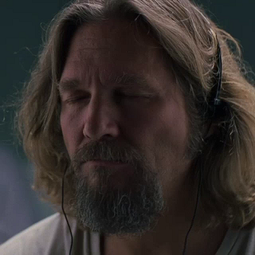

My name is Parham and this is my blog. I like music and i like to write about the albums that i listen to and share my journey through music. I love movies , so i'm gonna write about them too.
One of my favorite movies is "Big Lebowski" and that's why this page is called as Radio Dude. In the contact page you'll have the access to a spotify playlist of songs that i've selected from the albums. This is a blog , so i may write about some other stuff about my life and experiences too , but mostly i'm gonna talk about music and movies.